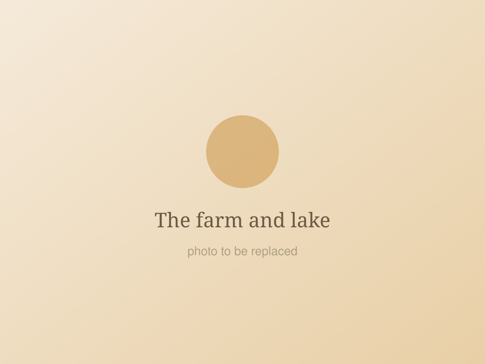
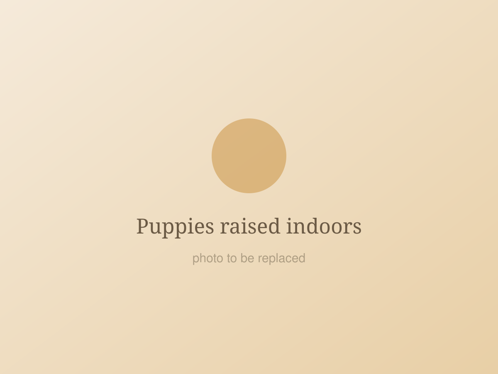
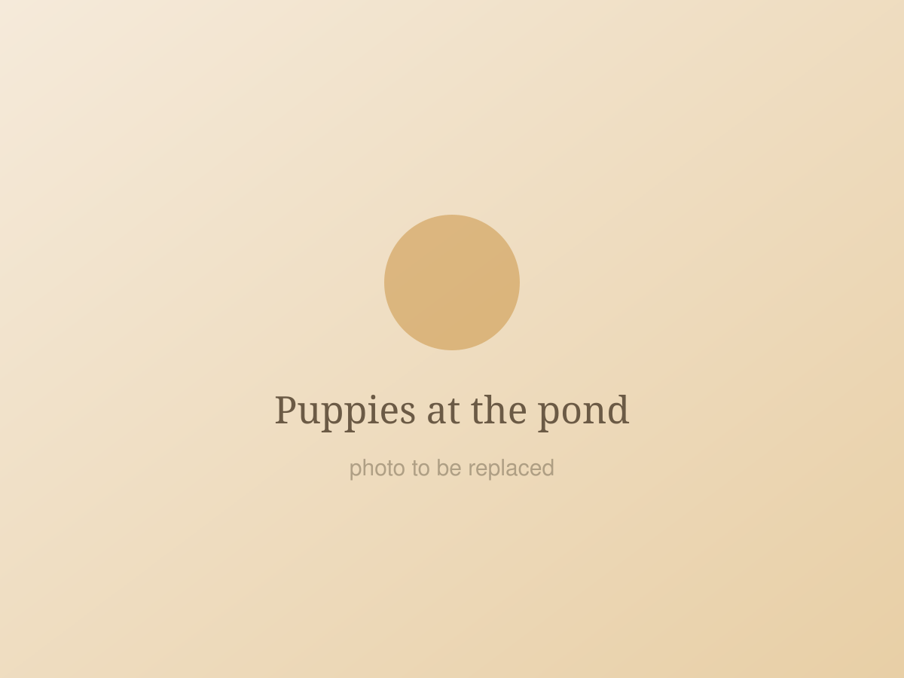
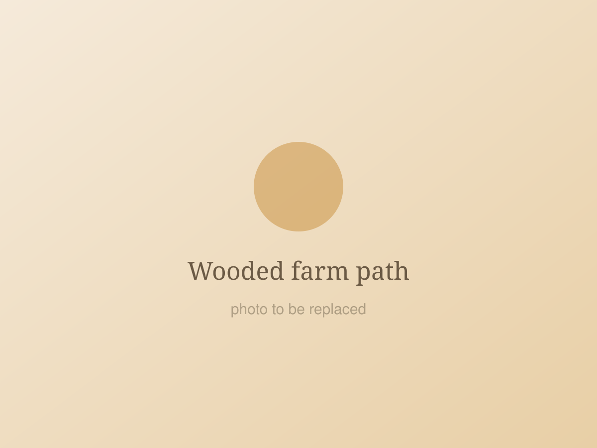

Raising Goldens on our farm since 1985
Creekstone Retrievers was founded in 1985 by Cindy Stubbs, on a beautiful country farm just minutes north of Birmingham, Alabama.
A large lake and room to run
Our farm has a large lake and lots of room for our Goldens to run and play — the kind of place a retriever is meant to grow up in.
We are dedicated to raising beautiful Golden Retriever puppies and giving every new family member a well socialized beginning in life. All of our Golden Retrievers have a great temperament and make wonderful companions for all ages.

Indoors, with our family
Our puppies are raised indoors on concrete floors, with heat through the winter and air conditioning through the summer, so they are comfortable and clean all year round.
All of our Goldens — the adults as well as the puppies — are well socialized with our family. They are handled every day, and they grow up around the ordinary noise and movement of a working household.

Walks, ponds and wooded paths
We take walks with our puppies on the farm to familiarize them with different surroundings. In the spring and summer there is a pond for the puppies to play in; in the fall and winter there are wooded paths to walk through.
By the time a puppy leaves us, new places, new footing and new sounds are already familiar — which makes settling into a new home that much easier.


What comes with every puppy
AKC registered
All of our puppies are AKC registered and are sold on a Limited Registration.
OFA certified parents
We guarantee that we breed healthy adult parents with OFA hip, heart and eye certifications.
Vet examined
Every puppy is examined by our veterinarian and comes with a written warranty before going to its new home.
About our written warranty
Our puppies go home with a written warranty. So that there are no surprises, please note that we do not guarantee or accept responsibility for puppies that develop:
- Cancer
- Cataracts
- Epilepsy
- Hip dysplasia
Come meet our Goldens
We are always glad to talk about our dogs. Call Cindy to ask a question or to arrange a visit to the farm.